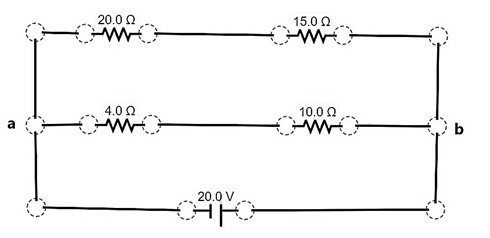

At the end of this activity, you are expected to describe the process in computing for the equivalent resistance, current and voltage in combinations of series and parallel connections.

At the end of this activity, you are expected to describe the process in computing for the equivalent resistance, current and voltage in combinations of series and parallel connections.
Activity 3.3. Series and Parallel Connections
1. Refresh the simulation page to have a new working space then plot the circuit diagram below. Letters a and b are considered nodes. 
The circuit presented is a combination of series and parallel connection. It contains 3 branches, one for the location of the battery, another branch for the 4Ω and 10Ω resistor and the last branch for the 20Ω and 15Ω resistor. The 4Ω and 10Ω resistors are in series with one another. When combined, the equivalent resistance for these two resistors are in parallel with the equivalent resistance of the 20Ω and 15Ω resistors which are also connected in series.
2. Draw the circuit diagram in the data and observation sheet as Figure 1. Use the correct symbols. Label the 4Ω, 10Ω, 20Ω, and 15Ω resistors as R1, R2, R3 and R4 respectively
3. In the data and observation sheet, make a simplified circuit diagram (Figure 2) combining resistors R1 and R2. Label the combined resistors in series as R1 - R2. Do the same for resistors R3 and R4.
4. Compute the equivalent resistance of the combined resistors (R1 - R2) using the equation you derived for series connection in the previous activity. Show your solution in the data and observation sheet.
5. Compute the equivalent voltage and equivalent current of the combined resistors (R1 - R2) using the equations you have derived in the previous activity. Show your solution in the data and observation sheet.
6. The diagram you made in procedure 3 can still be further simplified since the combined R1 and R2 resistors are in parallel with R3 and R4. As such, combine all the resistors to attain the simplest diagram (Figure 3) of which the current flows only around one rectangular loop. Use the label R1-R2//R3-R4 for all the combined resistors since R1 and R2 is parallel with R3 and R4, Draw the circuit in the data and observation sheet.
7. Compute the equivalent resistance of the combined resistors (R1-R2//R3-R4) using the equation you derived for parallel connection in the previous activity. Show your solution in the data and observation sheet.
8. Compute the equivalent voltage and equivalent current across the combined resistors (R1-R2//R3-R4) using the equations you derived for parallel connection in the previous activity. Show your solution in the data and observation sheet.
9. Verify your computations by measuring the current and resistance using the voltmeter and non-contact ammeter. Do this with each of the resistor and the combined resistors. List these values in the data and observation sheet (Table 1) under the column “meas” which means measured.
10. Proceed to the next phase then accomplish the data and observation sheet.